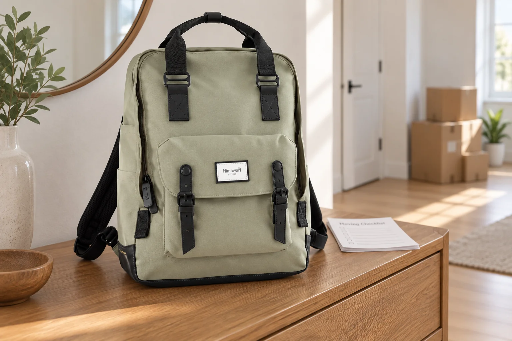

이사 당일 백팩: 상자에 넣지 않을 물건의 자리

이사 전날 대부분의 물건은 상자에 들어갑니다. 그런데 짐을 싣고 새집에 도착하기까지는 열쇠와 휴대전화, 계약 관련 서류처럼 바로 꺼내야 할 물건이 계속 생깁니다. ‘마지막 상자’에 모두 넣어두면 그 상자가 어디에 실렸는지부터 찾아야 하죠. 이사 당일 손에서 놓지 않을 백팩 한 개를 정하고, 이동 순서에 따라 내용물을 나누어 보세요. 짐의 양보다 누가 언제 꺼낼지가 더 중요한 날입니다.
상자를 닫기 전에 손에 남길 목록을 만듭니다
현관문을 잠글 때 필요한 열쇠, 새집 출입 방법, 휴대전화와 충전 도구, 신분 확인에 필요한 물건을 먼저 적어보세요. 이사 업체와 건물 관리사무소에서 안내받은 문서가 있다면 실제로 필요한 것만 따로 모읍니다. 귀중품은 공동으로 운반하는 상자에 섞지 않고 직접 관리할 가방에 둡니다. 가족이 함께 이동한다면 각자 챙길 물건을 나누되, 새집 출입에 필요한 물건의 담당자는 한 사람으로 정해두는 편이 찾기 쉽습니다.
출발 전과 도착 후에 꺼낼 자리를 나눕니다
옛집에서 바로 쓸 열쇠와 서류는 가방을 크게 열지 않아도 닿는 자리에, 새집에 도착해서 꺼낼 물건은 안쪽의 닫히는 주머니에 둡니다. 종이 문서는 파일에 넣어 접히거나 다른 물건과 엉키지 않게 합니다. 물병이나 간식은 서류·전자기기와 직접 닿지 않는 위치에 두고 뚜껑을 확인하세요. 무거운 물건을 모두 한 가방에 모으기보다 당일 이동 중 꼭 필요한 만큼만 남기는 것이 좋습니다.
이동하는 동안 가방의 주인을 바꾸지 않습니다
차량에 오르고 내릴 때마다 백팩이 누구 곁에 있는지 확인하세요. 잠시 내려놓아야 한다면 사람이 지켜볼 수 있는 위치를 고르고, 열쇠나 지갑을 꺼낸 뒤에는 같은 자리에 되돌려 넣습니다. 업체 직원에게 전달할 서류가 있더라도 원본을 건네야 하는지 먼저 확인하고, 필요한 기록은 별도로 남겨두세요. 물건을 여러 사람 사이에서 옮기면 마지막으로 누가 들고 있었는지 헷갈리기 쉬워, 가방 자체는 한 사람이 맡는 편이 안전합니다.
새집에서는 먼저 쓸 것만 꺼냅니다
새집에 들어간 직후에는 출입 수단과 연락 도구부터 확인합니다. 상자 정리용 도구나 청소용품이 필요하더라도 백팩 안의 개인 물건과 뒤섞지 않도록 별도 장소에 두세요. 설치 기사나 관리사무소와 연락할 일이 있다면 휴대전화 배터리와 필요한 안내를 바로 찾을 수 있는지 살펴봅니다. 문을 자주 드나드는 동안 가방을 통로에 두지 말고 눈에 보이는 한곳에 보관하면 상자에 가려지는 일을 줄일 수 있습니다.
하루가 끝나면 임시 자리를 해제합니다
이사 당일에만 필요한 출입 안내와 서류는 보관할 곳으로 옮기고, 충전 도구와 개인 물건은 평소 자리로 돌려놓습니다. 새집 열쇠가 여러 개라면 누가 어떤 열쇠를 가지고 있는지 확인하세요. 가방 안에 포장재나 먼지가 들어왔다면 비운 뒤 부드럽게 털고 제품 관리 표시를 따라 정리합니다. 대표 사진은 실제 Himawari No.1010 카키 제품을 참조한 이사 당일 연출 장면이며, 사진 속 상자와 소품은 제품 구성품이 아닙니다.
참고·안내
- Himawari No.1010 제품 정보
- 실제 Himawari No.1010 카키 원본 사진을 참조한 AI 연출 이미지입니다. 새집과 상자 등 주변 장면은 연출이며 구성품이나 수납 성능을 뜻하지 않습니다.
자주 묻는 질문
이사 당일 가방에 무엇을 먼저 넣어야 하나요?
옛집과 새집 출입에 필요한 물건, 연락 도구, 당일 확인할 서류처럼 상자 없이 바로 꺼내야 하는 것부터 챙기세요.
서류와 물병을 같은 백팩에 넣어도 되나요?
종이는 파일에 모으고 물병은 뚜껑을 확인해 떨어진 위치에 두세요. 누수 위험이 있다면 별도 운반이 낫습니다.